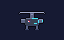
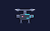
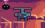
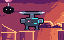
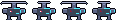
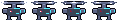
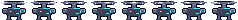

All pictures run at exact game timing (60 game frames per second) and are shown at 4 times size. Today the processor changes the rotor picture every 2 game frames. Hardware auto-animation shares one speed with the floating islands: a new picture every 7 game frames, about 8.6 per second. Question: which version still reads as a spinning rotor?
In V2 and V3 only the rotor (top 5 pixel rows) is redrawn. Body, lamp, size and colours are unchanged. The lamp blinks slower at the hardware speed in V1, V2 and V3 (about twice per second instead of 7.5 times).
On plain dark sky

V0 today: 4 frames, new frame every 2 game frames (30 per second)V1 same 4 frames, new frame every 7 game frames (naive switch)

V2 4 redrawn blur frames, every 7 game framesV3 8 redrawn blur frames, every 7 game frames
On the dusk background (crop)

V0 today: 4 frames, new frame every 2 game frames (30 per second)V1 same 4 frames, new frame every 7 game frames (naive switch)

V2 4 redrawn blur frames, every 7 game framesV3 8 redrawn blur frames, every 7 game frames
If the global speed were changed to 4 game frames (15 per second)
V2 at 4 game frames (only if the global speed changes; islands would move 1.75 times faster)V3 at 4 game frames (only if the global speed changes; islands would move 1.75 times faster)V2 at 4 game frames (only if the global speed changes; islands would move 1.75 times faster)V3 at 4 game frames (only if the global speed changes; islands would move 1.75 times faster)
Bot obstacle
Bot today: 2 frames, every 8 game framesBot as a 4-frame group A B A B, every 7 game framesBot as the study's 8-frame group A A A A B B B B at 7 game frames (28 per picture)
Frame sheets at 8 times size

V0 and V1: today's 4 frames (rotor wide, narrow, wide, narrow; lamp on, on, off, off)

V2: 4 blur frames (bright streak: tips, right, centre, left)

V3: 8 blur frames (same sweep in half steps)
Tile counts and palette use: numbers.txt in this folder.